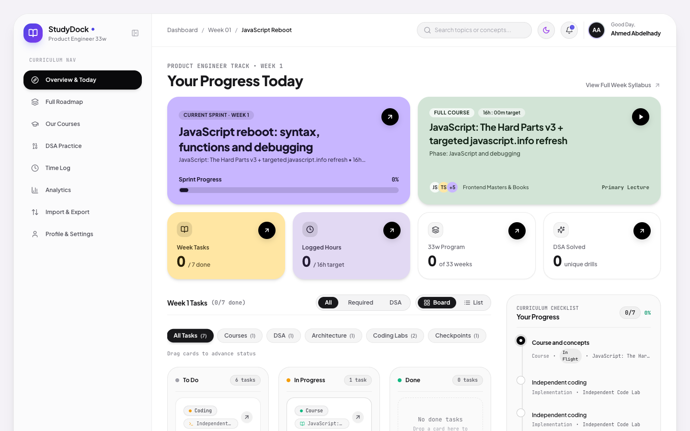
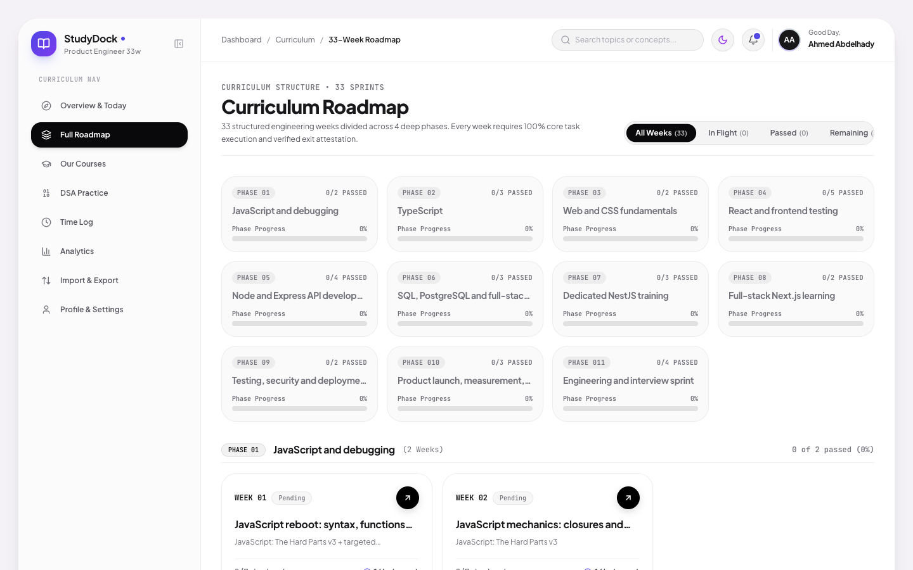
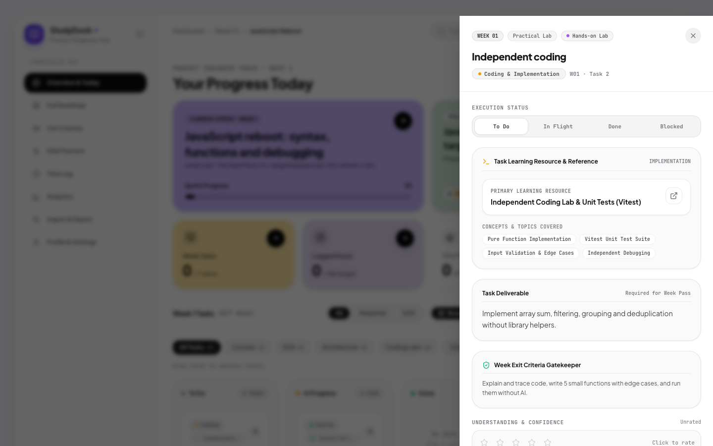
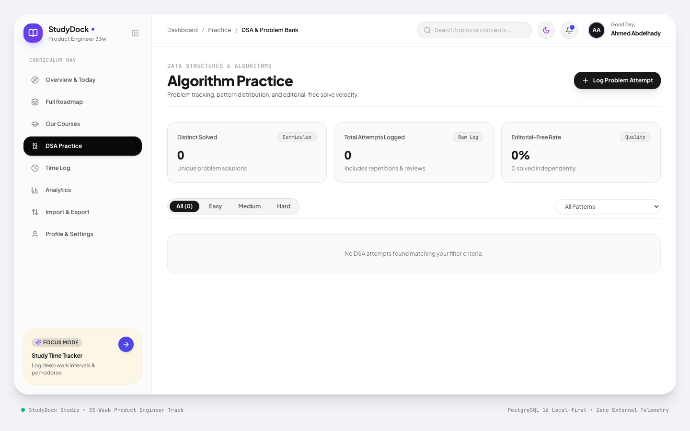

Product Engineer Curriculum & Execution Engine


"Explain and trace code, implement 5 core algorithms with edge cases, and run unit tests without AI assistance."


Open Source • Local-First Learning OS for Engineers